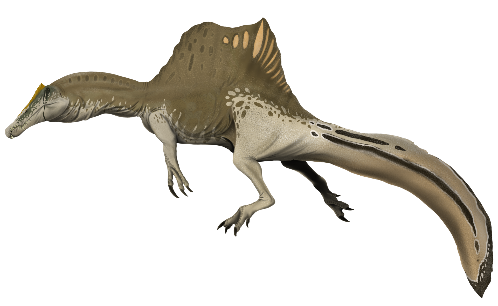

A digital natural history encyclopedia
LOST
WORLD
A world that once was. A history worth discovering.
Meet extinct animals through clear profiles, scientific evidence, and the traces they left behind. Facts, estimates, and unknowns are kept distinct.
Explore animals Or discover one at random